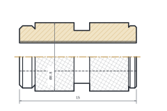
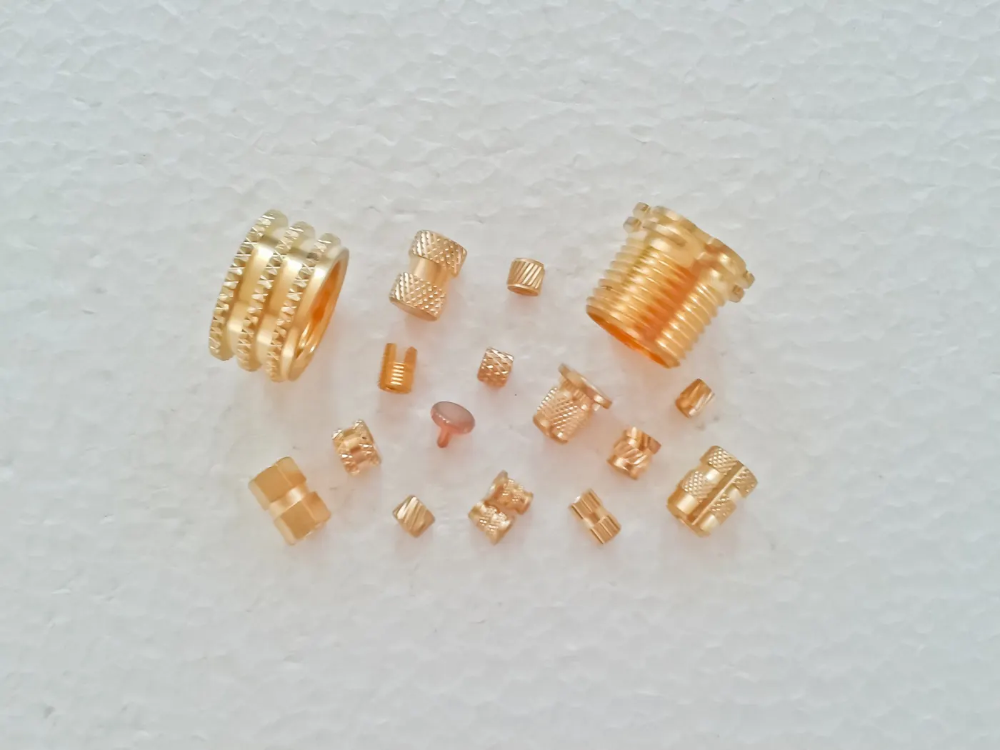
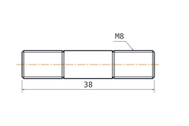
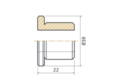

Brass moulding inserts
Threaded brass inserts for moulding into plastic parts, made to your drawing: knurled for torque, grooved for pull-out resistance and held to close tolerance so plastic can't flash into the thread.

- Shapes
- Round knurled · hexagonal · square
- Knurl
- Diamond · straight · unidirectional
- Diameter
- Ø5–38 mm
- Tolerance
- ±0.05 mm
- Threads
- M · UNC/UNF · BA · BSW, gauged GO / NO-GO
- Material
- Free-cutting brass CW614N (IS 319 Type I)
- Finish
- Natural, or plated in our plant: nickel or tin; silver or chrome on request
- Documents
- EN 10204 3.1 mill certificate, certificate of conformity and final inspection report with every batch; PPAP Level 3 on request · Quality
- Volumes
- From a few thousand pieces to millions a year
Insert types
Made to your drawing or sample.

- Mould-in threaded inserts
- Press-in inserts
- Flanged inserts
- Insulator inserts
- Inserts for electrofusion couplings
- Inserts for PE and PP pipe fittings
Design features
- Pull-out resistance
- A deep groove between knurls locks the insert into the plastic.
- No flash
- The bore after the thread is held to close tolerance so molten plastic can't enter the thread.
- Used in
- Moulded plastic parts, PE and PP pipe, electrofusion couplings, instrumentation, electrical and automotive parts.
Choosing an insert
Which knurl should I choose?
Diamond knurl for combined torque and pull-out resistance, straight knurl where torque matters most, unidirectional for specific press-in designs. Send the drawing and we'll advise.
Can you match an existing insert?
Yes. Send a sample or drawing; we match thread, knurl and dimensions.
Lead times, MOQ, NDA and delivery terms: Ordering & shipping.
Related




Send your insert drawing or a sample
Include the thread, knurl type and the plastic it is moulded into.